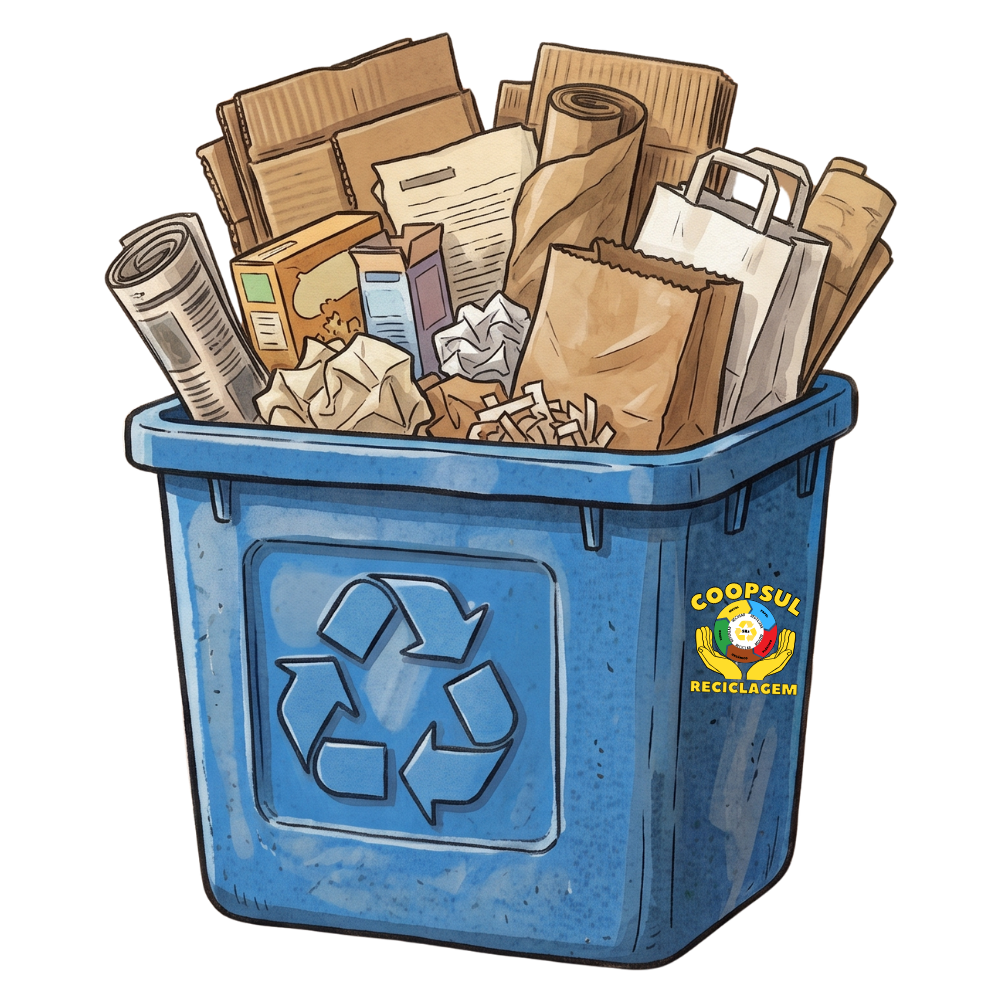
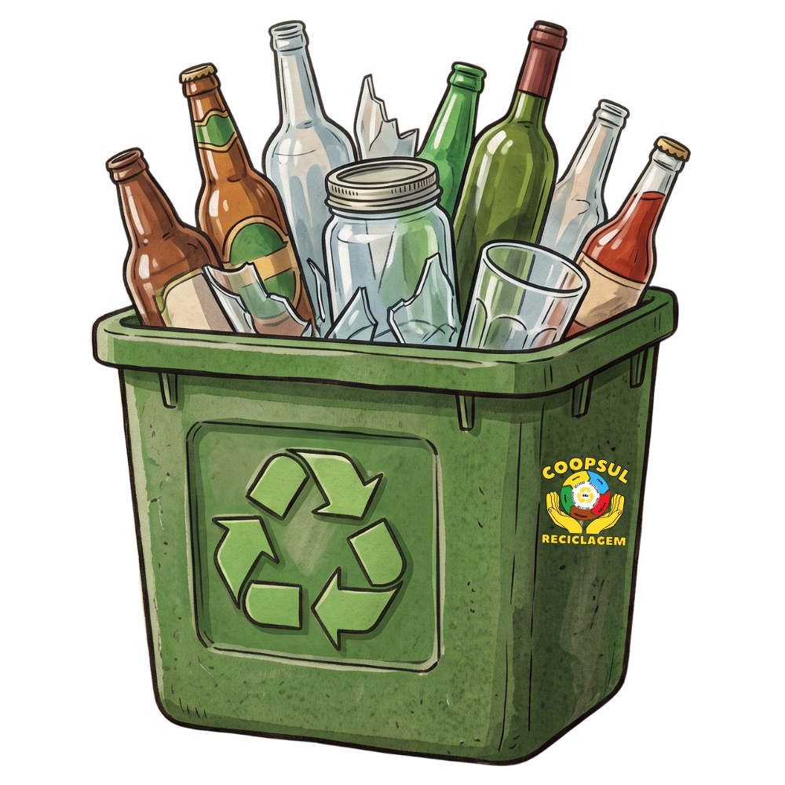
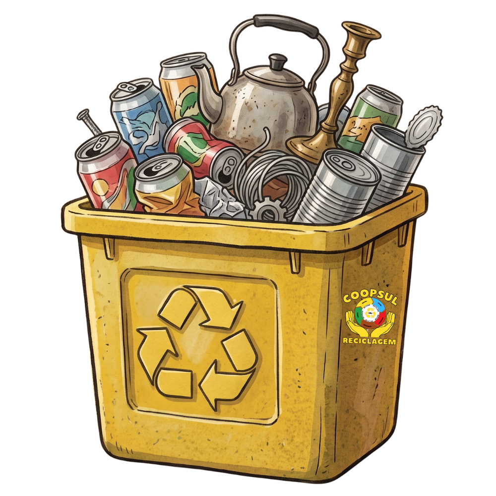
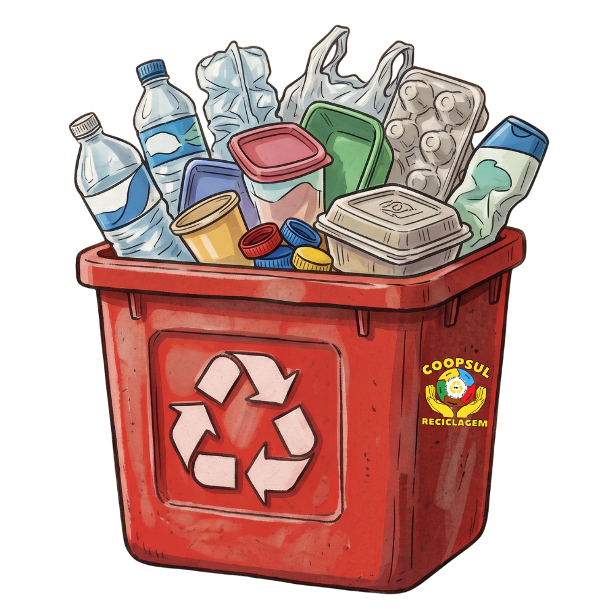

Reciclagem
Saiba como participar e contribuir com o meio ambiente
Como Funciona o Processo
Separação
Os materiais são separados por tipo (papel, plástico, metal, vidro) e por qualidade.
Classificação
Cada material é classificado e preparado para o processo de reciclagem específico.
Processamento
Os materiais são processados e transformados em matéria-prima para novos produtos.
Comercialização
A matéria-prima reciclada é vendida para indústrias que fabricam novos produtos.
Materiais Aceitos

Papel e Papelão- Jornais e revistas
- Caixas de papelão
- Folhas de papel
- Envelopes
- Cartões e cartolinas
*Não aceitamos papel higiênico, guardanapos usados ou papel plastificado.

Plásticos- Garrafas PET
- Embalagens de produtos de limpeza
- Sacos e sacolas plásticas
- Utensílios plásticos
- Embalagens de alimentos
*Lave as embalagens para remover resíduos antes de descartar.

Metais- Latas de alumínio (refrigerante, cerveja)
- Latas de aço (conservas, óleo)
- Tampas de metal
- Objetos de cobre, bronze e ferro
*Objetos pontiagudos devem ser embalados com cuidado.

Vidros- Garrafas de bebidas
- Potes de alimentos
- Frascos de perfumes e remédios
*Vidros quebrados devem ser embalados separadamente e identificados.
Dicas para uma Reciclagem Eficiente
Lave os materiais
Remova resíduos de alimentos e produtos das embalagens para evitar mau cheiro e contaminação.
Separe por tipo
Mantenha os materiais separados por categoria para facilitar o processo na cooperativa.
Reduza o volume
Amasse latas e garrafas, dobre caixas de papelão para ocupar menos espaço.
Remova tampas e rótulos
Tampas de metal e plástico devem ser separadas, assim como rótulos de papel.
Armazene corretamente
Guarde os materiais em local seco até o momento da entrega na cooperativa.
Conheça os dias de coleta
Informe-se sobre os dias e horários de coleta em seu bairro.